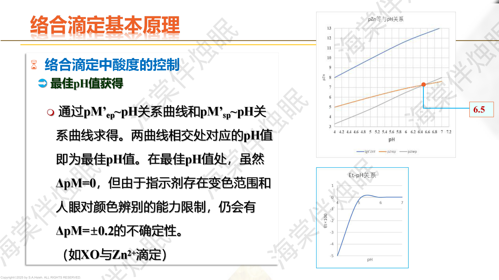
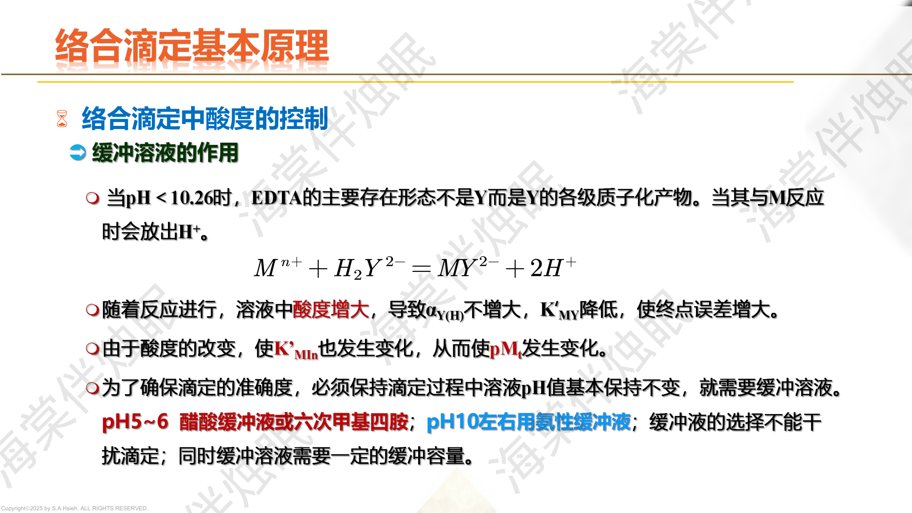
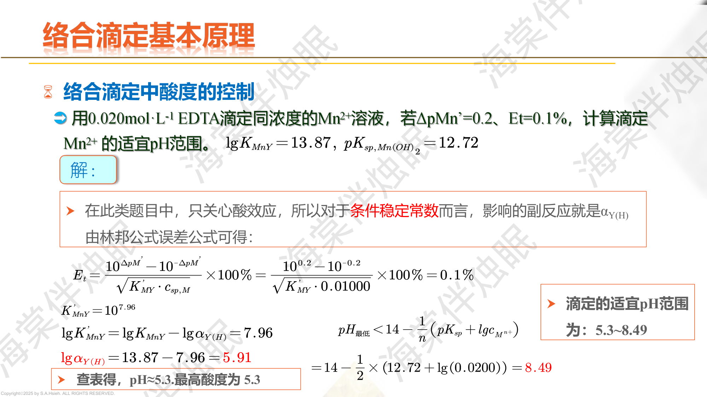

当 $\lg c_{sp} K'_{MY} \geq 6$ 时，终点误差 $E_t \leq \pm 0.1\%$，可进行准确滴定。
终点误差 $E_t$ 定量反映了指示剂变色点 $pM'_t$ 与化学计量点 $pM'_{sp}$ 偏差对滴定结果的影响：
$$\boxed{E_t = \frac{10^{\Delta pM'} - 10^{-\Delta pM'}}{c_{sp} \cdot K'_{MY}} \times 100\%}$$其中 $\Delta pM' = pM'_t - pM'_{sp}$。
公式分析：
用 EDTA 滴定 $\text{Zn}^{2+}$，$c_{sp} = 0.010$ mol/L，pH = 10，$\lg K'_{\text{ZnY}} = 16.0$。指示剂变色点使得 $pM'_t - pM'_{sp} = +0.5$。
$\Delta pM' = +0.5$
$c_{sp} \cdot K'_{MY} = 0.010 \times 10^{16.0} = 10^{14.0}$
$$E_t = \frac{10^{0.5} - 10^{-0.5}}{10^{14.0}} \times 100\% = \frac{3.16 - 0.316}{10^{14}} \times 100\% = \frac{2.84}{10^{14}} \times 100\%$$$E_t \approx 2.84 \times 10^{-12}\;\%$，终点误差极其微小。
滴定 $\text{Ca}^{2+}$，$c_{sp} = 0.010$ mol/L，pH = 10，$\lg\alpha_{Y(H)} = 0.5$，$\lg K'_{\text{CaY}} = 10.7 - 0.5 = 10.2$。指示剂 $\Delta pM' = -1.0$。
$c_{sp}K' = 10^{-2} \times 10^{10.2} = 10^{8.2}$
$$E_t = \frac{10^{-1.0} - 10^{1.0}}{10^{8.2}} \times 100\% = \frac{0.1 - 10}{10^{8.2}} \times 100\% = \frac{-9.9}{10^{8.2}} \times 100\%$$$E_t \approx -6.25 \times 10^{-6}\%$，仍然非常小。
$\Delta pM' < 0$ 说明终点偏前（欠滴定），$E_t$ 为负值。
| 判据 | 公式 | 含义 |
|---|---|---|
| 直接滴定 | $\lg c_{sp}K'_{MY} \geq 6$ | 保证 $|E_t| \leq 0.1\%$ |
| 分别滴定 | $\Delta\lg cK' \geq 6$ | 两种金属可分步滴定 |
| 最低 pH | $\lg\alpha_{Y(H)} \leq \lg K_{MY} + \lg c - 6$ | 由判据推出的酸度下限 |
$\lg K'_{CaY} = \lg K_{CaY} - \lg\alpha_{Y(H)} = 10.7 - 0.45 = 10.25$
$\lg c_{sp} K'_{CaY} = \lg(0.01) + 10.25 = -2 + 10.25 = 8.25 \geq 6$
满足判据，可以准确滴定。
受金属离子水解和氢氧化物沉淀限制。pH 过高时，金属离子会生成 $\text{M(OH)}_n$ 沉淀，导致滴定无法进行。
最高 pH 可从金属氢氧化物的 $K_{sp}$ 和金属浓度估算。
受 $\alpha_{Y(H)}$ 限制。酸度太大会使 $\lg K'_{MY}$ 降低，不满足 $\lg c_{sp}K'_{MY} \geq 6$ 的要求。
从 $\lg K_{MY} - \lg\alpha_{Y(H)} \geq 6 - \lg c_{sp}$ 得到允许的最大 $\lg\alpha_{Y(H)}$，再查表得到最低 pH。
| pH 范围 | 可滴定的金属离子 | 常用缓冲体系 |
|---|---|---|
| 1~2 | $\text{Fe}^{3+}$, $\text{Bi}^{3+}$, $\text{Th}^{4+}$, $\text{Zr}^{4+}$ | HCl-NaOH |
| 3~5 | $\text{Pb}^{2+}$, $\text{Cu}^{2+}$, $\text{Ni}^{2+}$, $\text{Zn}^{2+}$, $\text{Al}^{3+}$ | HAc-NaAc (pH 4~6) |
| 5~7 | $\text{Co}^{2+}$, $\text{Cd}^{2+}$, $\text{Mn}^{2+}$ | 六次甲基四胺 (pH 5~6) |
| 8~10 | $\text{Ca}^{2+}$, $\text{Mg}^{2+}$, $\text{Sr}^{2+}$, $\text{Ba}^{2+}$ | $\text{NH}_3$-$\text{NH}_4\text{Cl}$ (pH 10) |

PPT: 最佳pH值的获取方法
最佳 pH 值是使 $pM'_{sp}$ 与 $pM'_t$（指示剂变色点）恰好相等（即 $\Delta pM' = 0$、$E_t = 0$）的 pH 值。具体求法：

PPT: 配位滴定中缓冲溶液的作用
EDTA 与金属离子反应时会释放 $\text{H}^+$（因为 EDTA 以 $\text{H}_2\text{Y}^{2-}$ 等质子化形态存在）：
$$M^{n+} + H_2Y^{2-} \rightarrow MY^{(n-4)} + 2H^+$$这导致溶液 pH 随滴定进行而降低，引起以下问题：
解决方案：加入缓冲溶液维持 pH 恒定。
用 0.020 mol/L EDTA 滴定等浓度 $\text{Mn}^{2+}$，已知 $\lg K_{\text{MnY}} = 13.87$，$pK_{sp,\text{Mn(OH)}_2} = 12.72$，若允许 $\Delta pM' = 0.2$，$E_t = 0.1\%$，求适宜的 pH 范围。
最低 pH（最高酸度）：由 $E_t \leq 0.1\%$ 和 $\lg cK'_{MY} \geq 6$ 求得
将 $\Delta pM' = 0.2$ 代入林邦公式，$K'_{MY} = 10^{7.96}$
$\lg K'_{MY} = \lg K_{MY} - \lg\alpha_{Y(H)} = 7.96$
$\lg\alpha_{Y(H)} = 13.87 - 7.96 = 5.91$
查表：$\lg\alpha_{Y(H)} = 5.91$ 对应 pH $\approx$ 5.3
最高 pH（最低酸度）：由 $\text{Mn(OH)}_2$ 沉淀条件求得
$$pH_{max} = 14 - \frac{1}{2}(pK_{sp} + \lg c_{sp,M}) = 14 - \frac{1}{2}(12.72 + \lg 0.01) = 8.49$$适宜 pH 范围：5.3 ~ 8.5

PPT: 提高配位滴定选择性的方法
当满足此条件时，可在同一溶液中先滴定 M 再滴定 N（或只滴定 M 不受 N 干扰）。
若 $\Delta\lg cK'$ 不够大，可通过以下方式提高选择性：
$\lg K'_{FeY} = 25.1 - 13.51 = 11.59$，$\lg c \cdot K'_{FeY} = -2 + 11.59 = 9.59 \geq 6$ ✓
$\lg K'_{ZnY} = 16.5 - 13.51 = 2.99$，$\lg c \cdot K'_{ZnY} = -2 + 2.99 = 0.99 < 6$ ✗
$\Delta\lg cK' = 9.59 - 0.99 = 8.60 \geq 6$ ✓
在 pH = 2.0 时，可以选择性滴定 $\text{Fe}^{3+}$ 而不受 $\text{Zn}^{2+}$ 干扰。
溶液含 $\text{Bi}^{3+}$ 和 $\text{Fe}^{3+}$，各 0.01 mol/L。$\lg K_{\text{BiY}} = 27.9$，$\lg K_{\text{FeY}} = 25.1$。
两者的 $\lg K$ 差值：$\Delta\lg K = 27.9 - 25.1 = 2.8$
浓度相同，因此 $\Delta\lg cK' = \Delta\lg K' = \Delta\lg K = 2.8 < 6$
不能通过单纯控制酸度分别滴定 $\text{Bi}^{3+}$ 和 $\text{Fe}^{3+}$。
| 掩蔽剂 | 被掩蔽的离子 | 备注 |
|---|---|---|
| 三乙醇胺 (TEA) | $\text{Fe}^{3+}$, $\text{Al}^{3+}$, $\text{Ti}^{4+}$ | 碱性条件下使用 |
| $\text{F}^-$（氟化物） | $\text{Al}^{3+}$, $\text{Fe}^{3+}$, $\text{Ti}^{4+}$, $\text{Sn}^{4+}$ | 酸性条件有效 |
| $\text{CN}^-$（氰化物） | $\text{Zn}^{2+}$, $\text{Cd}^{2+}$, $\text{Cu}^{2+}$, $\text{Ni}^{2+}$, $\text{Co}^{2+}$ | 剧毒！碱性条件 |
| 抗坏血酸 | $\text{Fe}^{3+}$（还原为 $\text{Fe}^{2+}$） | 氧化还原掩蔽 |
| $\text{NH}_3 \cdot \text{H}_2\text{O}$ | 使 $\text{Fe}^{3+}$, $\text{Al}^{3+}$ 沉淀分离 | 沉淀分离 |
| 巯基乙酸 | $\text{Fe}^{3+}$（还原+配位） | 酸性/碱性均可 |
| 酒石酸 / 柠檬酸 | $\text{Al}^{3+}$, $\text{Fe}^{3+}$ | 防止水解沉淀 |
$\text{Al}^{3+}$ 与 $\text{F}^-$ 形成极稳定的 $\text{AlF}_6^{3-}$ 配合物。在足量 $\text{F}^-$ 存在下：
$$\alpha_{\text{Al}(F)} = 1 + \beta_1[\text{F}^-] + \beta_2[\text{F}^-]^2 + \cdots + \beta_6[\text{F}^-]^6$$典型条件下 $\lg\alpha_{\text{Al}(F)} \approx 10$，即 $\alpha_{\text{Al}(F)} \approx 10^{10}$。
此时 $\text{Al}^{3+}$ 的条件稳定常数：
$$\lg K'_{\text{AlY}} = \lg K_{\text{AlY}} - \lg\alpha_{\text{Al}(F)} - \lg\alpha_{Y(H)} = 16.1 - 10 - \lg\alpha_{Y(H)}$$即使 pH 较高（$\lg\alpha_{Y(H)}$ 很小），$\lg K'_{\text{AlY}}$ 也只有 ~6，远不满足准确滴定条件。$\text{Al}^{3+}$ 被完全掩蔽。
用 EDTA 标准溶液直接滴定含金属离子的待测溶液。
条件：反应快速、定量，有合适指示剂，无干扰。
先加入过量已知的 EDTA，再用另一种金属标准溶液（如 $\text{Zn}^{2+}$）回滴过量的 EDTA。
适用：反应慢（如 $\text{Al}^{3+}$, $\text{Cr}^{3+}$）、无合适指示剂、或金属离子在滴定 pH 下会水解沉淀。
先用另一金属的 EDTA 配合物（如 $\text{MgY}$）与待测金属反应：$\text{M} + \text{MgY} \rightarrow \text{MY} + \text{Mg}$，然后滴定释放出的 $\text{Mg}^{2+}$。
适用：待测金属无合适指示剂，但置换出的金属有合适指示剂。
对不能直接与 EDTA 配位的物质（如 $\text{SO}_4^{2-}$, $\text{PO}_4^{3-}$），先与已知过量的金属离子沉淀或反应，再滴定剩余金属离子。
例：测 $\text{SO}_4^{2-}$：加过量 $\text{Ba}^{2+}$ 沉淀 $\text{BaSO}_4$，再滴定剩余 $\text{Ba}^{2+}$。
原理：水中 $\text{Ca}^{2+}$ 和 $\text{Mg}^{2+}$ 的总量即为水的总硬度，以 $\text{CaCO}_3$ 的 mg/L 表示。在 pH = 10 的 $\text{NH}_3$-$\text{NH}_4\text{Cl}$ 缓冲溶液中，用 EDTA 标准溶液同时滴定 $\text{Ca}^{2+}$ 和 $\text{Mg}^{2+}$，以 EBT 为指示剂。
操作步骤：
计算公式：
$$\text{总硬度 (mg/L)} = \frac{c \times V \times M_{\text{CaCO}_3}}{V_{\text{水样}}} \times 1000 = \frac{c \times V \times 100.08}{V_{\text{水样}}/1000}$$取 100.0 mL 水样，加入 pH = 10 的 $\text{NH}_3$-$\text{NH}_4\text{Cl}$ 缓冲溶液，以 EBT 为指示剂，用 0.01000 mol/L EDTA 滴定至蓝色，消耗 15.20 mL。求水的总硬度（以 $\text{CaCO}_3$ 的 mg/L 表示）。
$n_{\text{EDTA}} = 0.01000 \times 15.20 = 0.1520\;\text{mmol}$
$n_{\text{Ca+Mg}} = n_{\text{EDTA}} = 0.1520\;\text{mmol}$（1:1 配位）
总硬度 $= \frac{0.1520 \times 100.08}{100.0} \times 1000 = 152.1\;\text{mg/L}$（以 $\text{CaCO}_3$ 计）
同一水样 100.0 mL：(1) 在 pH = 10 用 EBT 指示剂，消耗 0.01000 mol/L EDTA 15.20 mL（测总硬度）；(2) 另取 100.0 mL 在 pH = 12~13 用钙指示剂 NN，消耗同浓度 EDTA 9.60 mL（仅测 $\text{Ca}^{2+}$）。求 $\text{Ca}^{2+}$ 和 $\text{Mg}^{2+}$ 各自的含量。
$\text{Ca}^{2+}$ 含量：
$n_{\text{Ca}} = 0.01000 \times 9.60 = 0.0960\;\text{mmol}$
$[\text{Ca}^{2+}] = \frac{0.0960}{100.0} \times 1000 = 0.960\;\text{mmol/L}$
以 $\text{CaCO}_3$ 计：$0.960 \times 100.08 = 96.1\;\text{mg/L}$
$\text{Mg}^{2+}$ 含量：
$n_{\text{Mg}} = n_{\text{total}} - n_{\text{Ca}} = 0.1520 - 0.0960 = 0.0560\;\text{mmol}$
$[\text{Mg}^{2+}] = \frac{0.0560}{100.0} \times 1000 = 0.560\;\text{mmol/L}$
以 $\text{CaCO}_3$ 计：$0.560 \times 100.08 = 56.0\;\text{mg/L}$
问题：$\text{Al}^{3+}$ 与 EDTA 的反应速度很慢，且在 pH 4~5 下有水解倾向，不能直接滴定。
解决方案（返滴定法）：
计算：
$$n_{\text{Al}} = n_{\text{EDTA(加入)}} - n_{\text{Zn(回滴)}}$$溶液中同时含 $\text{Bi}^{3+}$ 和 $\text{Pb}^{2+}$。$\lg K_{\text{BiY}} = 27.9$，$\lg K_{\text{PbY}} = 18.0$，差值 $\Delta\lg K = 9.9$。
步骤：
$n_{\text{Bi}} = c \times V_1$，$n_{\text{Pb}} = c \times V_2$
取合金溶解后的试液 25.00 mL（含 $\text{Bi}^{3+}$ 和 $\text{Pb}^{2+}$），在 pH = 1 下用 0.02000 mol/L EDTA 滴定 $\text{Bi}^{3+}$，消耗 12.50 mL。然后调 pH = 5.5，继续滴定 $\text{Pb}^{2+}$，又消耗 18.00 mL。求溶液中 $\text{Bi}^{3+}$ 和 $\text{Pb}^{2+}$ 的浓度。
$\text{Bi}^{3+}$：
$n_{\text{Bi}} = 0.02000 \times 12.50 = 0.2500\;\text{mmol}$
$[\text{Bi}^{3+}] = \frac{0.2500}{25.00} = 0.01000\;\text{mol/L}$
$\text{Pb}^{2+}$：
$n_{\text{Pb}} = 0.02000 \times 18.00 = 0.3600\;\text{mmol}$
$[\text{Pb}^{2+}] = \frac{0.3600}{25.00} = 0.01440\;\text{mol/L}$
$\lg K_{\text{ZnY}} = 16.5$，$\lg K_{\text{AlY}} = 16.1$，两者 $\lg K$ 非常接近，无法通过酸度控制分别滴定。
方案：加入 $\text{NH}_4\text{F}$，利用 $\text{F}^-$ 对 $\text{Al}^{3+}$ 的强掩蔽作用（$\lg\alpha_{\text{Al}(F)} \approx 10$）。
合金溶解后含 $\text{Cu}^{2+}$、$\text{Pb}^{2+}$、$\text{Zn}^{2+}$。
在 pH = 5~6 下，用 EDTA 滴定三种离子总量，消耗 $V_1$ mL。
$$n_{\text{Cu}} + n_{\text{Pb}} + n_{\text{Zn}} = c \times V_1$$另取一份等量试液，加入过量 KCN（碱性条件）。$\text{CN}^-$ 将 $\text{Cu}^{2+}$、$\text{Zn}^{2+}$ 掩蔽为 $\text{Cu(CN)}_4^{3-}$、$\text{Zn(CN)}_4^{2-}$，但不掩蔽 $\text{Pb}^{2+}$（$\text{Pb}^{2+}$ 不与 $\text{CN}^-$ 形成稳定配合物）。
用 EDTA 单独滴定 $\text{Pb}^{2+}$，消耗 $V_2$ mL。
$$n_{\text{Pb}} = c \times V_2$$在上述含 KCN 的溶液中，加入甲醛（$\text{HCHO}$）。甲醛与 $\text{CN}^-$ 反应生成乙醇腈：
$$\text{HCHO} + \text{CN}^- \rightarrow \text{HOCH}_2\text{CN}$$甲醛能解除 $\text{CN}^-$ 对 $\text{Zn}^{2+}$ 的掩蔽（释放 $\text{Zn}^{2+}$），但不能解除对 $\text{Cu}^{2+}$ 的掩蔽（$\text{Cu(CN)}_4^{3-}$ 更稳定）。
继续用 EDTA 滴定释放出的 $\text{Zn}^{2+}$，消耗 $V_3$ mL。
$$n_{\text{Zn}} = c \times V_3$$ $$n_{\text{Cu}} = c \times V_1 - c \times V_2 - c \times V_3 = c(V_1 - V_2 - V_3)$$返滴定法（Back Titration）的核心操作：
计算公式：$n_M = n_{\text{EDTA(加入)}} - n_{\text{Zn(回滴)}}$
EDTA 的 $\text{p}K_a$ 值：0.9, 1.6, 2.07, 2.75, 6.24, 10.34
在 $\text{p}K_{a5} = 6.24$ 到 $\text{p}K_{a6} = 10.34$ 之间，$\text{HY}^{3-}$ 是主要形态。
在 pH = 2.75 ~ 6.24 之间，$\text{H}_2\text{Y}^{2-}$ 是主要形态（这也是二钠盐溶解在中性水中的形态）。
标定 EDTA 浓度常用的基准物质：
$\text{CaCO}_3$ 标定操作：
称取 0.2504 g $\text{CaCO}_3$ 基准物质（$M = 100.09$），溶于 HCl，调 pH 至 12，用 EDTA 滴定，消耗 24.98 mL。求 EDTA 的浓度。
$n_{\text{Ca}} = \frac{0.2504}{100.09} = 2.502 \times 10^{-3}\;\text{mol} = 2.502\;\text{mmol}$
$c_{\text{EDTA}} = \frac{2.502}{24.98} = 0.1002\;\text{mmol/mL} = 0.1002\;\text{mol/L}$
$\lg K_{\text{BiY}} = 27.9$，$\lg K_{\text{FeY}} = 25.1$，$\Delta\lg K = 2.84 < 6$。
结论：单纯控制酸度不能分别滴定。$\Delta\lg K$ 至少需要 $\geq 6$ 才能实现分步滴定。
解决方案：
$\lg K_{\text{CuY}} = 18.8$
由判据 $\lg cK' \geq 6$：
$$\lg c + \lg K_{\text{CuY}} - \lg\alpha_{Y(H)} \geq 6$$ $$-2 + 18.8 - \lg\alpha_{Y(H)} \geq 6$$ $$\lg\alpha_{Y(H)} \leq 10.8$$查表：$\lg\alpha_{Y(H)} = 10.8$ 对应 pH $\approx$ 3
因此 $\text{Cu}^{2+}$ 的最低滴定 pH $\approx$ 3。
实际操作中选择 pH = 3~5（HAc-NaAc 缓冲），使用 PAN 或 XO 指示剂。
一、基本概念线
EDTA 性质 $\rightarrow$ 稳定常数 $K_{MY}$ $\rightarrow$ 副反应系数 $\alpha$ $\rightarrow$ 条件稳定常数 $K'_{MY}$ $\rightarrow$ 准确滴定判据 $\lg cK' \geq 6$
二、应用技术线
酸度控制 $\rightarrow$ 选择性滴定 $\rightarrow$ 掩蔽与解蔽 $\rightarrow$ 四种滴定方式 $\rightarrow$ 实际分析方案
三、计算能力线
查 $\lg\alpha_{Y(H)}$ 表 $\rightarrow$ 求 $\lg K'$ $\rightarrow$ 判断能否滴定 $\rightarrow$ 求最低/最高 pH $\rightarrow$ 滴定曲线 $\rightarrow$ 终点误差